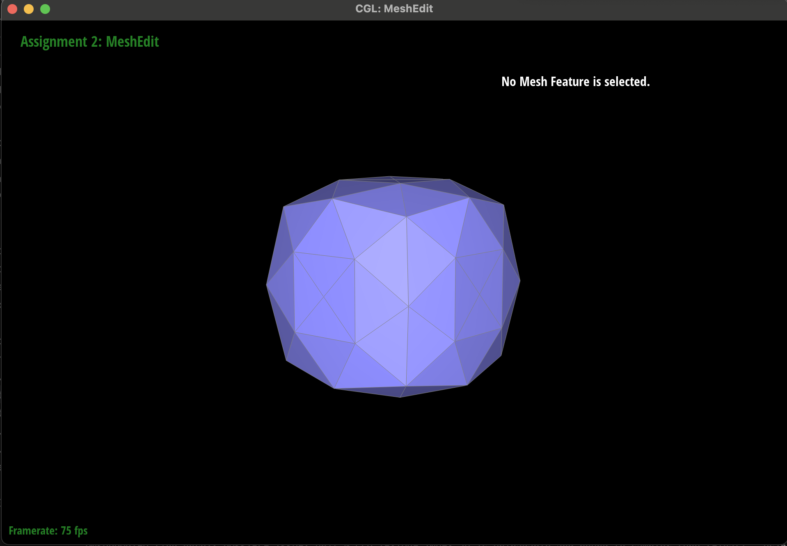

TODO:
De Casteljau's algorithm is a recursive algorithm meant to evaluate Bezier curves. It takes as input an initial set of control points and a parameter t that decides how to interpolate along the control points. In the first iteration, the algorithm calculates intermediate points along the edges between the control points (distance based on t), then connects these 2 intermediate points. We use the newly created polygon as the next points to recurse on. This process repeats until the algorithm has reached a single point or if the curve is smooth.
The de Casteljau algorithm extends to Bezier surfaces very easily because we just need to deal with an extra dimension (Bezier surfaces are defined by 2D control points array). Given an nxn grid of control points, we first ran the de Casteljau algorithm row-wise, in order to create a 1D N-length array of control points Pi. Finally, we ran the de Casteljau algorithm one more time (visualized vertically) on these Pi values to evaluate the Bezier surface.
In order to implement the area-weighted vertex normals, we first referenced Lecture 6 slides on shading triangle meshes and the Blinn-Phong Reflection model. We knew that for each vertex, the shade would be an area-weighted vertex normal of the surrounding faces. Thus, we also referenced the Half-edge data structure from Discussion 4, specifically the exercise of traversing the mesh using the half edges. For each surrounding face of the vertex, we stored its area as well as its normal vector. Then, we calculated the area-weighted normals, and averaged those to return the final unit normal for that vertex.
With vertex normals:

Without vertex normals:

In order to implement the edge flip operation, the main point of logic was ensuring that all of the mesh element pointers remained correct. We first set temporary variables storing the old center edges, 4 half edges, 4 vertices, and 2 faces. Then, we reassigned the realigned vertices, edges, faces, and Finally the half edges using the SetNeighbors function provided. While we don't believe we had any unique or particularly interesting implementation tricks, drawing out visuals of the before and after flipping diagrams, and physical pointers to each location was extremely helpful in the implementation.
Before edge flip:

After edge flip:

We used the check_for(...) debugging function to check what elements are getting pointed. We also used many print statements line-by-line to check for what specific lines were segfaultin.
Similarily to implementing edge flipping, edge splitting was also all about keeping track of pointers and mesh elements. First, we extracted all of the mesh info into temporary variables, such as creating HalfedgeIter center = e0->halfedge() and HalfedgeIter centerTwin = center->twin(). Then, we created the new mesh elements, which were the new edges and new vertex with position calculated from the average of the vertical vertices (B and C). Then, we went about creating the new faces and half edge elements, and then assigning the correct pointers in vertices, half edges to edges, and half edges to faces. Finally, we updated the half edges using the setNeighbors function provided, going about a similar process of diligently following 2 visuals of the before and after mesh elements.
Before edge split:
After edge split:

Before edge splits and flips:
Afted edge splits and flips:

We used the check_for(...) debugging function to check what elements are getting pointed. We also used many print statements line-by-line to check for what specific lines were segfaultin.
N/A
Our approach mostly followed the ordered steps given in the spec. First, we looped through every single vertex in the mesh and calculated the updated position of it based on the equation using n (vertex degree), u (constant based on n), and original position of the vertex. We stored that new position in the newPosition field for the vertex, and set the flag to isNew == false. Then, we split every edge. And, we iterated over every edge in the mesh, storing that new position using the equation: 3/8 * (A + B) + 1/8 * (C + D). This required using the HalfEdge interface provided. Next, we iterated over each edge again: If that edge connected an old vertex and a new vertex in the mesh, then we would flip it. (1 blue and 1 brown edge example in the lecture slides). Finally, we copied those new positions for vertices into the final Vertex::position. While there weren't any unique debugging tricks we tried, we utilized help from staff and lecture slides each step of the way, trying to visualize the problem using the provided diagrams.
Sharp corners and edges become more smooth and rounded after loop subdivision. Also, the length of edges
becomes reduced as we are inserting new vertices in the midpoint of edges. In the overall shape, sharper corners
and edges become more smoothed out the more subdivides we do. However, if you preprocess the cube/shape
by splitting and flipping an edge to create an obvious indent in the shape, that indent remains preserved
over subdivides. By pre-splitting edges, we can somewhat guide the sharpness of the subdivided shape.
Yes, you can pre-process the cube with edge flips and splits so that the cube subdivides symmetrically.
In our case, we split every single face, so that there's an "X" on every single face of the cube before
loop subdividing. The asymmetry can occur because in the subdivision process, the weights used are not always
perfectly symmetric. When we use the equation (1 - n * u) * original_position + u * original_neighbor_position_sum
to update the position of an old vertex, the constants for n and u change based on the vertex degree. We noticed
that the same vertex for multiple iterations changed from degree 3->6->5, signifying no symmetry. Thus, When
we determine the position of a new vertex based on the neighboring vertices, the weights may not be the same, so we
get asymmetric stretching in different directions.
Pre-processing helps alleviate these effects because we can ensure that each vertex is connected along the same
number of edges to start (essentialy making an X on each face), so that the future weighting is distributed the same,
and we get symmetric subdivision in future iterations.

N/A